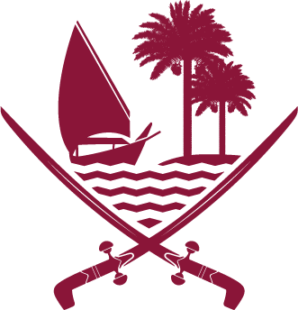

<md-sidenav ng-class="{'gt-small':sidebar.isGreatThanSmall()}" md-whiteframe="2" id="main-sidebar"
            md-is-locked-open="sidebar.sidebarStatus('main-sidebar')" layout="column" md-component-id="main-sidebar">
    <div scroll-directive destroy-scroll="{{sidebar.checkSidebarScroll()}}">
        <md-toolbar class="sidebar-toolbar" layout-align="center center" layout="column">
            <div class="pattern"></div>
            <md-button id="pin-btn" ng-click="sidebar.toggleSidebarLocked('main-sidebar')" class="md-icon-button">
                <md-icon md-svg-icon="pin"></md-icon>
            </md-button>
            
            <h5 flex id="application-name">{{lang.application_name}}</h5>
            <p id="toolbar-description">{{lang.app_description}}</p>
        </md-toolbar>
        <div flex id="main-sidebar-content">
            <ul class="sidebar-menu">
                <li id="sidebar-search">
                    <div layout="row" layout-align="start center">
                        <md-icon md-svg-icon="search-web"></md-icon>
                        <input autocomplete="off" id="search-menu-item-input" flex
                               placeholder="{{lang.lbl_search_for_item_in_menu}}"
                               ng-model="sidebar.search">
                    </div>
                </li>
            </ul>
            <sidebar-menu-directive search="sidebar.search" items="sidebar.items" lang="lang"
                                    level="1"></sidebar-menu-directive>
        </div>
    </div>
</md-sidenav>
